Un nuevo comienzo para descubrir Pinto... y España
Tras la última versión fallida de PaPinto, decidí empezar desde 0, pidiéndole a Gemini un prompt mucho más profesional, ajustado y desarrollado. Para ello, le dimos el siguiente contexto a ChatGPT:
imagina que eres un profesional en desarrollar prompts de aplicaciones web. Necesito que me hagas preguntas hasta que te diga para para cubrir con todas las necesidades tanto funcionales como en la interfaz de la aplicacion.
A lo que ChatGPT, me dio la siguiente respuesta:
¡Perfecto — me pongo en modo entrevistador de producto! 🚀 Te haré preguntas enfocadas y ordenadas (funcionalidad, flujos, datos, interfaz, accesibilidad, seguridad, métricas, etc.) y seguiré preguntando hasta que digas “para”. Responde como prefieras: una por una o agrupadas.
Empiezo con las primeras preguntas clave para entender el objetivo general y el alcance:
¿Cuál es la idea principal de la aplicación? (qué problema resuelve y para quién)
¿Quiénes son los usuarios objetivo? (perfil, nivel técnico, número estimado de usuarios)
¿Cuál es el caso de uso principal — la tarea que el usuario debe poder completar en menos pasos posible?
¿Necesitas roles o permisos distintos (por ejemplo: admin, editor, usuario, invitado)? Si sí, ¿qué puede hacer cada rol?
¿La app requiere autenticación? ¿Qué tipos (email/contraseña, SSO — Google/Apple/Empresa, OAuth, login sin contraseña)?
¿Qué datos principales va a manejar la app? (ej.: usuarios, productos, documentos, mensajes, imágenes — y volumen aproximado)
¿Necesita integrarse con otros servicios (p. ej. pago, CRM, API externas, almacenamiento, correo, analytics)? Di cuáles.
¿Qué funciones "must-have" (imprescindibles) y cuáles "nice-to-have" (deseables) para la primera versión (MVP)?
¿Qué plataformas debe soportar? (desktop web, mobile web, PWA, app nativa)
¿Requisitos de rendimiento/latencia o uso offline/latencia variable?
¿Privacidad/seguridad/legal relevantes? (GDPR, CCPA, cifrado, datos sensibles, autenticación multifactor)
¿Idiomas y localización? ¿Soporte multilenguaje necesario?
¿Preferencias visuales/branding? (colores, tono, ejemplos de apps que te gusten)
¿Necesitas accesibilidad (WCAG) a un nivel concreto?
¿Qué métricas te importan para medir éxito? (conversiones, retención, tiempo tarea, NPS, MAU/DAU)
¿Cuánto contenido dinámico habrá (notificaciones en tiempo real, colaboraciones en vivo)?
¿Necesitas panel administrativo o herramientas de moderación/soporte?
¿Requisitos de exportación/importación de datos (CSV, Excel, API)?
¿Cómo quieres manejar errores y feedback del usuario (toasts, modales, inbox de soporte)?
¿Planes de monetización? (suscripción, freemium, anuncios, pago por uso)
¿Qué flujos clave deberían diseñarse primero (registro, onboarding, flujo principal, pago, soporte)?
¿Tienes restricciones técnicas o stack preferido (React, Vue, backend, base de datos)?
¿Hay ejemplos de UX/UI que te parezcan ideales o que quieras evitar?
¿Necesitas tests automatizados, QA o entornos (staging, prod) desde el inicio?
¿Plazos o hitos importantes (lanzamiento MVP, demo inversores, feria, etc.)?
Dime si quieres que siga haciendo preguntas más detalladas por área (UX, UI visual, microinteracciones, copy, states de error, formularios, validaciones, etc.). Y recuerda: di “para” cuando quieras que deje de preguntar. ¿Con cuál de las preguntas quieres empezar a responder?
Respuesta a las preguntas:
1. Quiero que sea una guia de viajes de mi pueblo, en este caso Pinto. Tiene que tener las siguientes secciones: Inicio, Pinto, Itinerarios(tambien mostrar alternativas segun lo que quiera el turista: para familia, mochileros, lujo o de aventura), Reservas (aqui se le muestra al usuario los hoteles disponibles tanto en Pinto como en España, desde hostales como hoteles, aqui el usuario puede buscar segun la valoracion y el precio dependiendo de cuantas personas sean, es necesario que el pago sea con tarjeta, bizum, y si es en efectivo, al menos debe pagarse un adelanto con trajeta o por bizum. Tambien que el turista pueda reservar transporte, tours o entradas directamente ), España, Salud y Seguridad (que el usuario pueda ver los centros medicos mas cercanos y los contactos de emergencia y telefonos de ayuda), Guia de movilidad(que coches pueden alquilar los turistas, o que transporte publico pueden usar, tambien mencionar el bono de transporte con sus tarifas dependiendo de la edad y que áreas cubre cada bono, mostrar comparaciones de costes entre taxi, bus, metro, tren, bici, uber), Cine(como una especie de taquillera en el que se muestren las peliculas y las series top españolas que han llegado al cine internacionalmente y las que mejor han sido valoradas por el público español), Mi Lista (en el que el usuario pueda ver los sitios que ha marcado como favoritos, las reseñas que ha puesto en los sitios recomendados, y una agenda en el que el usuario pueda planificar la ruta que quiera hacer para visitar a los sitios que le han gustado, o para simplemente apuntar lo que considere importante), Ajustes (en el que pueda iniciar sesion para marcar sus sitios favoritos y poner reseñas, y otras funciones que creas que complementen esta seccion). Quiero que la aplicacion tenga disponible el modo claro y el modo oscuro, y que tambien este disponible para el usuario cambiar el idioma a Español, Ingles, Italiano, Aleman, Frances, Ruso y Chino. Pero esta funcion de cambiar el idioma, necesito que traduzca toda la aplicacion, cada seccion, lo que haya dentro de cada seccion, botones, todo.
2. Los usuarios principalmente son turistas que llegan a España y principalmente visitan a mi pueblo, Pinto.
3. Iniciar sesion complementando los campos necesarios para crear su cuenta y que pueda disfrutar de algunas funciones que no estan disponibles si no inician sesion
4.No hay roles como tal, en plan, el usuario si no inicia sesion, pues no puede marcar sitios como favoritos ni pueden poner reseñas, ni tienen disponible la seccion de Mi Lista. Mientras que si inician sesion, pues tienen disponibles todas esas funciones
5. Ya lo he dicho. No necesariamente, solo es necesaria si quiere disfrutar todas las funcionalidades
6.Va a manejar las reseñas y los sitios que el usuario marque como favoritos, y creo que imagenes, que seran las imagenes de los sitios que tenga la aplicacion
7.Pues hay una seccion en el que el usuario marca la opcion de pago en la seccion de Reservas, asi que no se que servicio necesita ser integrado
8.Ya he dicho las imprescindibles, las deseables serian mapas generales y de zonas especificas, señalizacion de rutas, barrios, transporte, lugares de interés, mapas interactivos, y datos sobre el clima, la moneda y las costumbres locales, especificar los requisitos de entrada al entrar al pais: visado, vacunas, seguridad. Tambien que tenga realidad aumentada para señalar puntos importantes. Y que el usuario tenga la posibilidad de crear y guardar su propio itinerario.
9. Debe ser una aplicacion web que sea responsive y para multidispositivo 10.no se 11. no 12. ya lo he especificado 13. si, que tenga una interfaz parecida a una aplicacion de Iphone, con esa estetica. 14. no 15. no 16. ya lo he especificado. 17. no 18. no 19. Quiero que cuando aparezca un error, aparezca un mensaje en tiempo real indicando el error que se esta produciendo, evitando cargar nuevamente la pagina para mostrar errores. El mensaje tiene que informar: que paso(muy breve), por que paso(si tiene sentido para el usuario) y que puede hacer(accion recomendada). Para que el usuario sepa que la app trabaja: quiero que tenga la aplicacion spinner para cargas, barras de progreso en operaciones largas y estados de botones(Cargando, Enviado). Y en cuanto a notificaciones, que tenga toasts(pequeños avisos temporales), Modales (cuando la decision sea importante) y Banners (informacion global permanente). Pero tambien quiero que haya feedback positivo, no solo alertar de los errores, sino tambien: "Cambios guardados correctamete", "Se ha tramitado correctamente el pago", cosas asi
20. Ya lo he especificado, solo depende de si inicia sesion el usuario para disfrutar de todas las funcionalidades 21.como lo veas 22. no 23. ni idea, lo mejor que veas tu 24. pues de todo lo que te he redactado anteriormente, como lo veas 25. no Una cosa que es importante es que quiero que el codigo de la aplicacion sea principalmente en HTML, pero se puede usar Javascript, c++, css, Vanilla, y otros lenguajes que se puedan incorporar al html.
--------------------------------------------------------------------------------------------------------------------
PROMPT GENERADO POR CHATGPT
📌 PROMPT MAESTRO PARA GENERAR UNA APLICACIÓN WEB – GUÍA TURÍSTICA DE PINTO
Eres un desarrollador senior especializado en aplicaciones web responsive con HTML como base principal.
Debes generar una aplicación completa que funcione como guía turística del municipio de Pinto (España), con un diseño y experiencia parecida a una app de iPhone (estética limpia, moderna, minimalista).
La aplicación debe estar totalmente traducida y ser capaz de cambiar el idioma dinámicamente entre:
Español, Inglés, Italiano, Alemán, Francés, Ruso y Chino.
La traducción debe aplicar a todas las secciones, textos, botones, mensajes, notificaciones, títulos, formularios, errores y contenido.
📌 SECCIONES PRINCIPALES DE LA APLICACIÓN
1. Inicio
Presentación general de la app.
Acceso rápido a secciones clave (Pinto, Itinerarios, Reservas, España…).
Diseño tipo “app iOS”.
2. Pinto
Información turística local.
Imágenes de lugares importantes.
Descripción cultural, histórica y de ocio.
3. Itinerarios
Debe incluir:
Itinerarios predeterminados según el tipo de turista:
Familia
Mochileros
Lujo
Aventura
Posibilidad de mostrar alternativas recomendadas según perfil.
Opción de crear y guardar itinerarios personalizados (si el usuario inicia sesión).
4. Reservas
El usuario puede:
Buscar y reservar hoteles en Pinto y toda España:
Filtrar por precio, valoración, número de personas.
Mostrar desde hostales hasta hoteles de lujo.
Reservar:
Transporte
Tours
Entradas a actividades
Métodos de pago permitidos:
Tarjeta
Bizum
En efectivo (pero con adelanto obligatorio por tarjeta o Bizum)
Pagos seguros e interfaz estilo iOS.
Mostrar disponibilidad, galerías de imágenes y valoraciones.
5. España
Guía general del país.
Información de cultura, regiones, clima, moneda, costumbres.
Requisitos de entrada al país:
Visado
Vacunas
Requisitos de seguridad
6. Salud y Seguridad
Centros médicos más cercanos.
Teléfonos de emergencia y asistencia.
Ubicación en mapa.
7. Guía de Movilidad
Debe incluir:
Información de alquiler de coches.
Información de transporte público:
Bus, metro, tren, bici, taxi, Uber.
Comparación de costes entre medios de transporte.
Información del Bono transporte de Madrid:
Tarifas por edades.
Zonas que cubre cada bono.
Mapas y rutas.
8. Cine
“Taquillera” de películas y series españolas reconocidas.
Las más valoradas por el público español.
Las que han llegado a cines internacionales.
9. Mi Lista (Solo disponible al iniciar sesión)
El usuario puede:
Ver sitios guardados como favoritos.
Gestionar reseñas que ha escrito.
Crear una agenda personal para rutas o notas importantes.
Guardar y editar itinerarios propios.
10. Ajustes
Iniciar/cerrar sesión.
Cambiar idioma.
Cambiar entre modo claro y oscuro.
Otras opciones sugeridas por el sistema (según buen diseño UX).
📌 USUARIOS Y AUTENTICACIÓN
No existen roles especiales.
Dos estados posibles:
Usuario sin iniciar sesión:
No puede:
Marcar favoritos
Crear itinerarios personalizados
Ver “Mi Lista”
Escribir reseñas
Usuario con sesión iniciada:
Puede:
Marcar sitios como favoritos
Crear, guardar y editar itinerarios
Dejar reseñas
Acceder a “Mi Lista”
Método de registro:
Email y contraseña (flexible si se quiere ampliar).
📌 CONTENIDO Y DATOS
La aplicación manejará:
Favoritos
Reseñas
Imágenes de lugares
Información turística
Listados de alojamientos (propios o externos)
📌 FUNCIONALIDADES DESEABLES EXTRA (NICE-TO-HAVE)
Mapas interactivos.
Señalización de rutas y barrios.
Información meteorológica.
Realidad aumentada (AR) para señalar puntos importantes.
Información de moneda, clima, costumbres, requisitos de entrada.
Comparación visual de medios de transporte.
📌 UX / NOTIFICACIONES / FEEDBACK
La aplicación debe incluir:
Manejo de errores en tiempo real
Sin recargar la página, mostrar:
Qué pasó (muy breve)
Por qué pasó (si tiene sentido)
Qué puede hacer el usuario
Indicadores de carga
Spinners
Barras de progreso
Botones con estados (“Cargando…”, “Enviado”)
Notificaciones
Toasts: mensajes temporales
Modales: para decisiones importantes
Banners: para información general persistente
Feedback positivo
Ejemplos:
“Cambios guardados correctamente”
“Pago procesado exitosamente”
“Reserva completada”
📌 APARIENCIA Y DISEÑO
Debe imitar la estética de una app de iPhone:
Bordes suaves
Efectos de profundidad tipo iOS
Animaciones fluidas
Minimalismo visual
Tipografía limpia
Modo:
Claro
Oscuro
📌 TECNOLOGÍAS PERMITIDAS
Código principalmente en HTML, complementado con:
CSS
JavaScript
Vanilla JS
C++
Otros lenguajes que se integren con HTML si necesario
Debe ser una aplicación web responsive y multidispositivo.
📌 TU TAREA COMO GENERADOR
Con toda esta información, debes crear:
La arquitectura completa de la aplicación
El diseño UI/UX estilo iPhone
Todo el código necesario (HTML + CSS + JS principalmente)
Sistema multilenguaje
Sistema de login
Gestión de reservas y pagos
Itinerarios predefinidos y personalizados
Diseño de mapas, transporte, salud, cine y España
Modo claro/oscuro
Optimización para móvil y tablet
Animaciones y notificaciones
Y generar una versión funcional completa.
Yo le deje claro una cosa: pero quiero que sea una aplicacion web que cubra Android y iOS, solamente la estetica e interfaz la quiero de un estilo parecido al de iOS
Y ChatGPT me respondió lo siguiente:
Perfecto — actualizo el PROMPT MAESTRO para aclarar que la aplicación será web, compatible con Android e iOS, completamente responsive, pero con estética e interfaz inspiradas en iOS.
Aquí tienes la versión corregida y final:
📌 PROMPT MAESTRO – APLICACIÓN WEB MULTIDISPOSITIVO (ANDROID + iOS) CON ESTÉTICA iOS
Eres un desarrollador senior especializado en aplicaciones web responsivas y multiplataforma.
Debes generar una aplicación web (WebApp) que funcione perfectamente en Android, iOS, tablets, ordenadores y navegadores modernos, pero cuya interfaz visual, animaciones y estilo general estén inspirados en las apps nativas de iOS (minimalista, elegante, bordes suaves, transiciones fluidas).
La aplicación es una Guía Turística interactiva del municipio de Pinto (España), con traducción completa a varios idiomas y con funcionalidades avanzadas.
📌 PLATAFORMA Y TECNOLOGÍAS
La aplicación debe ser:
✔ Web
✔ Responsive
✔ Compatible con Android y iOS al 100%
✔ Con apariencia y comportamiento similar a una app de iPhone
✔ Posible de instalar como PWA (opcional)
✔ Construida principalmente con:
HTML (estructura principal)
CSS (estilos y diseño tipo iOS)
JavaScript / Vanilla JS (lógica)
Otros lenguajes integrables en HTML si se desea (ej.: C++ WebAssembly, opcional)
📌 IDIOMAS DISPONIBLES (TRADUCCIÓN COMPLETA)
La app debe permitir cambiar entre los siguientes idiomas y traducir:
Todo el contenido
Cada sección
Botones
Textos dinámicos
Errores
Notificaciones
Formularios
Elementos UI
Contenidos de cada página
Idiomas:
Español, Inglés, Italiano, Alemán, Francés, Ruso y Chino.
📌 SECCIONES PRINCIPALES
1. Inicio
Diseño limpio estilo iOS
Íconos suaves y tarjetas elegantes
Acceso a secciones principales
2. Pinto
Información turística, cultural e histórica
Galerías de imágenes
3. Itinerarios
Incluye:
Itinerarios recomendados:
Familia
Mochileros
Lujo
Aventura
Recomendación automática de itinerarios según el tipo de turista
Crear, guardar y personalizar itinerarios (usuarios registrados)
4. Reservas
El usuario puede reservar:
Hoteles en Pinto y toda España
Tours, transporte y entradas
Filtros:
Precio
Valoración
Cantidad de personas
Tipo de alojamiento
Pagos considerados:
Tarjeta
Bizum
Efectivo (con pago anticipado obligatorio por tarjeta o Bizum)
Se debe integrar un sistema de pagos seguro (el generador puede seleccionarlo).
5. España
Guía general del país
Clima, moneda, costumbres, regiones
Requisitos de entrada:
Visados
Vacunas
Seguridad
6. Salud y Seguridad
Centros médicos cercanos con mapa
Teléfonos de emergencia y asistencia
7. Guía de Movilidad
Incluye:
Alquiler de coches
Transporte público: tren, metro, bus, taxi, bici, Uber
Comparación de precios entre medios
Bono transporte de Madrid:
Tarifas por edad
Zonas
Qué cubre cada bono
8. Cine
Películas y series españolas más valoradas
Las que han tenido éxito internacional
Información tipo “taquillera”
9. Mi Lista (solo usuarios registrados)
El usuario puede:
Ver favoritos
Guardar itinerarios
Añadir notas personales
Ver y gestionar reseñas propias
10. Ajustes
Iniciar sesión / cerrar sesión
Cambiar idioma
Cambiar entre modo claro / oscuro
Preferencias adicionales
📌 AUTENTICACIÓN
Usuarios sin sesión:
No pueden usar Mi Lista
No pueden marcar favoritos
No pueden escribir reseñas
Usuarios con sesión:
Acceso a todas las funciones
Pueden guardar itinerarios
Pueden dejar reseñas
Pueden guardar favoritos
📌 FUNCIONALIDADES EXTRA (NICE TO HAVE)
Mapas interactivos
Mapas de zonas, barrios y rutas
AR para señalar puntos de interés
Información del clima en tiempo real
Señalización de transporte
Comparadores visuales
📌 UX – ERRORES, NOTIFICACIONES Y FEEDBACK
Debe incluir:
Errores en tiempo real
Qué pasó
Por qué pasó
Qué puede hacer el usuario
(Sin recargar página)
Indicadores visuales
Spinners
Barras de progreso
Botones con estados
“Cargando…”
“Enviado”
Notificaciones estilo iOS
Toasts
Modales para decisiones importantes
Banners persistentes
Feedback positivo
Ej.:
“Cambios guardados correctamente”
“Pago completado con éxito”
📌 DISEÑO VISUAL (INSPIRADO EN iOS)
Bordes redondeados
Colores suaves
Sombreado sutil
Efectos “blur” estilo iOS
Animaciones fluidas
Componentes con look Apple
Compatible con modo claro y oscuro
📌 TU TAREA COMO GENERADOR
Debes generar:
Arquitectura completa
Diseño UI/UX estilo iOS
Todo el código principal (HTML + CSS + JS)
Sistema de login
Cambios de idioma globales
Gestión completa de reservas y pagos
Funciones de itinerarios
Modo claro/oscuro
Optimización responsive para Android y iOS
Sistema de favoritos, reseñas y agenda
Mapas, movilidad, cine, salud y seguridad
Notificaciones y animaciones tipo iOS
Genera una versión funcional, completa y lista para usar.
A lo que le aclaré que el Prompt era para pasárselo a Gemini, y me lo ajusto de la siguiente manera, que tampoco es exagerado, solamente al principio del prompt pone en contexto a Gemini:
📌 PROMPT MAESTRO PARA GEMINI – GENERAR APLICACIÓN WEB MULTIPLATAFORMA (ANDROID + iOS) CON ESTILO iOS
Gemini, actúa como un desarrollador full-stack senior experto en construir aplicaciones web responsivas y multiplataforma. Tu tarea es generar una aplicación web completa que funcione en Android, iOS, tablets y escritorio, pero cuyo diseño visual y experiencia sean similares a una aplicación nativa de iOS.
Quiero que generes arquitectura, código, interfaz, componentes y lógica usando principalmente:
HTML como base
CSS
JavaScript / Vanilla JS
(Opcional) WebAssembly o C++ si lo consideras útil
La aplicación es una guía turística avanzada del municipio de Pinto (España) y debe incluir traducción completa a varios idiomas, sistema de reservas, itinerarios y experiencia estilo iOS.
✅ 1. Requisitos generales
La aplicación debe ser:
Web
Responsive (Android + iOS + desktop)
Diseñada con estética iOS
Compatible como PWA (opcional)
Modo Claro / Modo Oscuro
Soporte multilenguaje completo
Español
Inglés
Italiano
Alemán
Francés
Ruso
Chino
Gemini debe generar un sistema que traduzca todas las secciones, botones, textos, mensajes, notificaciones, errores y formularios.
✅ 2. Secciones obligatorias de la aplicación
Genera la app con las siguientes secciones completas:
INICIO
Pantalla principal estilo iOS
Accesos a todas las secciones
PINTO
Información turística
Imágenes de lugares importantes
ITINERARIOS
Debe incluir:
Itinerarios para:
Familias
Mochileros
Lujo
Aventura
Sugerencias dinámicas según tipo de turista
Crear, guardar y personalizar itinerarios (solo usuarios con sesión iniciada)
RESERVAS
Debe permitir reservar:
Hoteles en Pinto y España
Transportes
Tours
Entradas
REQUISITOS:
Filtros: precio, valoración, personas, tipo de alojamiento
Métodos de pago:
Tarjeta
Bizum
Efectivo con adelanto obligatorio por tarjeta o Bizum
Sistema de pago seguro (elige el más lógico)
ESPAÑA
Guía cultural del país
Clima, moneda, costumbres
Requisitos de entrada (visado, vacunas, seguridad)
SALUD Y SEGURIDAD
Centros médicos cercanos
Teléfonos de emergencia
Ubicación en mapa
GUÍA DE MOVILIDAD
Incluye:
Alquiler de coches
Bus, metro, tren, taxi, Uber, bici
Comparación de costes
Bono de transporte de Madrid:
Tarifas por edades
Zonas
Qué cubre cada bono
CINE
Películas y series españolas más valoradas
Obras que han llegado al cine internacional
Las más populares en España
MI LISTA (solo usuarios registrados)
El usuario puede:
Ver favoritos
Guardar itinerarios
Escribir y editar reseñas
Guardar notas personales
AJUSTES
Iniciar / cerrar sesión
Cambiar idioma
Activar modo claro/oscuro
Configuraciones adicionales
✅ 3. Sistema de usuarios
Dos estados:
🔹 Usuario sin sesión:
No puede marcar favoritos
No puede guardar itinerarios
No puede escribir reseñas
No puede acceder a “Mi Lista”
🔹 Usuario con sesión iniciada:
Tiene acceso a todas las funciones
Puede guardar itinerarios
Puede marcar favoritos
Puede escribir reseñas
✅ 4. UX / UI estilo iOS que debes generar
Gemini debe replicar una interfaz estilo iOS:
Bordes suaves
Sombras ligeras
Tipografía clara
Botones redondeados
Tarjetas estilo Apple
Animaciones fluidas
Transiciones suaves
Efectos blur (glassmorphism)
Componentes con estética similar a iOS 17
✅ 5. Errores, notificaciones y feedback
La app debe incluir:
Errores en tiempo real
Sin recargar página, explicando:
Qué pasó
Por qué pasó
Qué puede hacer el usuario
Indicadores de proceso
Spinners
Barras de progreso
Botones con estados (Cargando, Enviado)
Notificaciones estilo iOS
Toasts
Modales
Banners
Feedback positivo
Ejemplos:
“Cambio guardado correctamente”
“Pago completado exitosamente”
✅ 6. Funcionalidades extra que debe incluir
Mapas interactivos
Información de clima
Señalización de rutas
Comparación de medios de transporte
Realidad aumentada (AR) para puntos de interés
Moneda, costumbres, visado, seguridad
✅ 7. Tu tarea, Gemini
Quiero que generes:
La arquitectura completa de la aplicación
Todo el código principal (HTML + CSS + JS)
Componentes UI estilo iOS
Sistema completo de traducciones
Sistema de login
Funcionalidad de reservas y pagos
Itinerarios predeterminados + personalizados
Modo claro/oscuro
Versión responsive para Android y iOS
Mapas, cine, movilidad, salud, España, Pinto
Sistema de favoritos, reseñas y agenda
Notificaciones estilo iOS
Entrega todo lo necesario para una versión funcional lista para ejecutar.
---------------------------------------------------------------------------------------------------------------------
Paraa esta nueva y definitiva aplicación, se obtuvieron 15 versiones. A continuación, iremos viendo cada una y las modificaciones que hemos ido implementando en cada una de ellas para obtener el resultado final de "Descubre Pinto"
1ª VERSION
Una vez mandado el prompt a Gemini, nos dio la siguiente versión... con un error en la consola.

{kind=link}
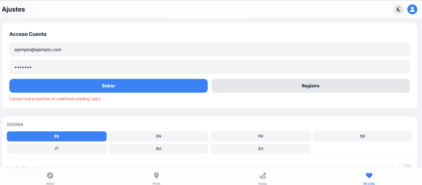
{kind=link}
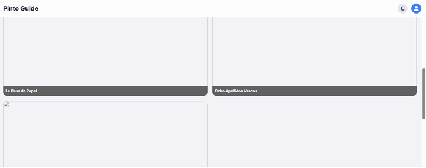
{kind=link}
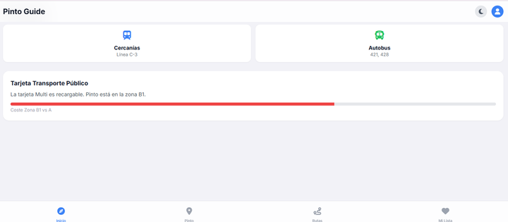
{kind=link}
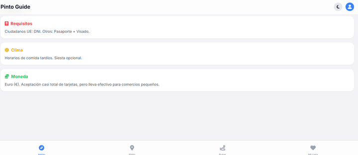
{kind=link}
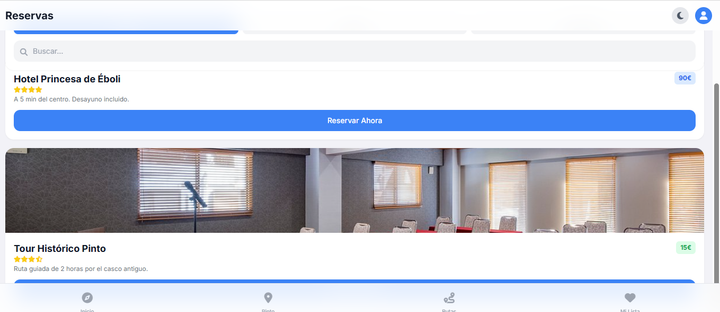
{kind=link}
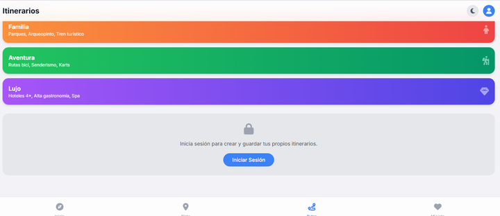
{kind=link}
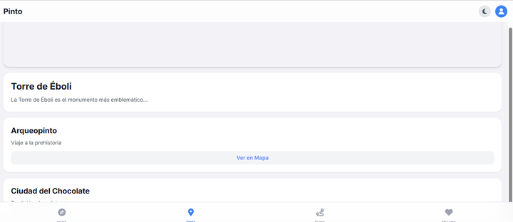
{kind=link}
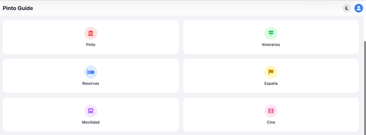
{kind=link}
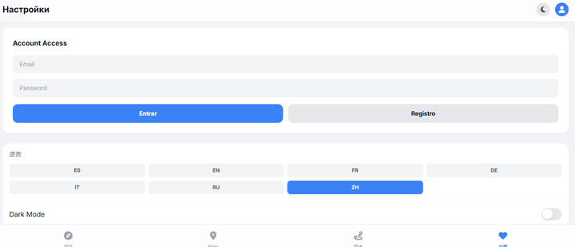
{kind=link}
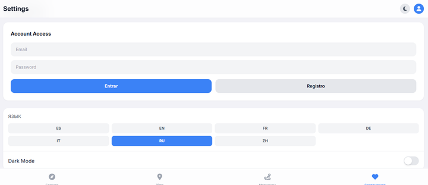
{kind=link}
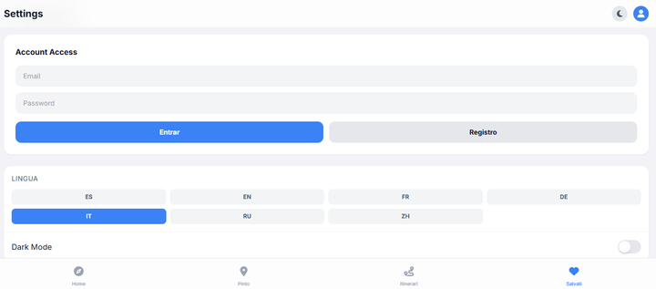
{kind=link}
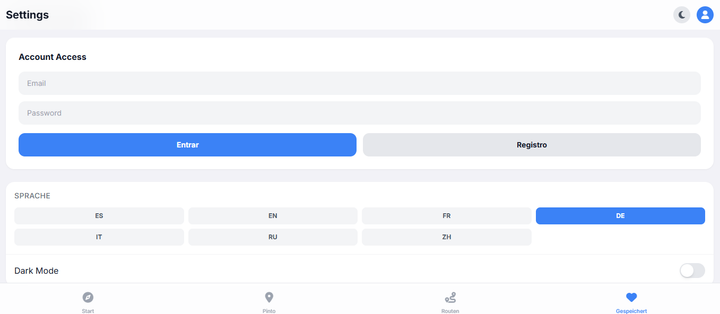
{kind=link}
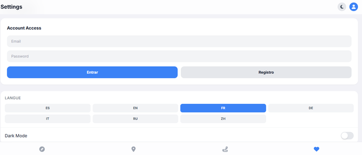
{kind=link}
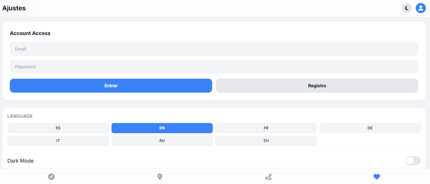
{kind=link}
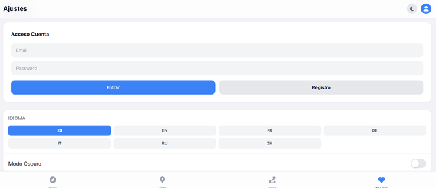
{kind=link}
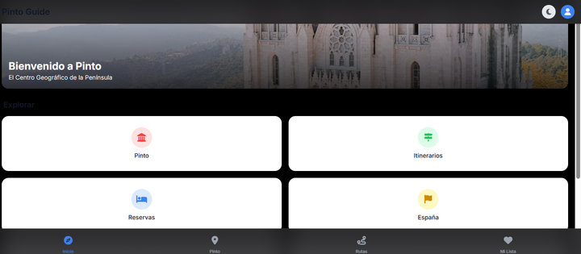
{kind=link}
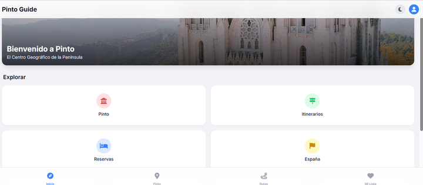
{kind=link}
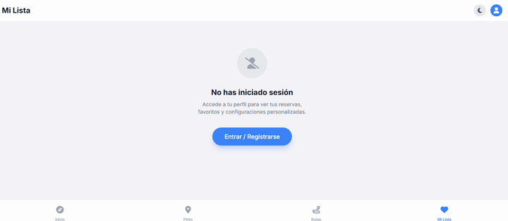
La primera versión se ajustó a la idea principal que tenía, además que me gustó mucho más la interfaz y el diseño. Así que esta sería la base con la que iba a empezar a trabajar.
2ª VERSION
{kind=link}
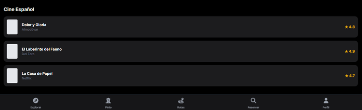
{kind=link}
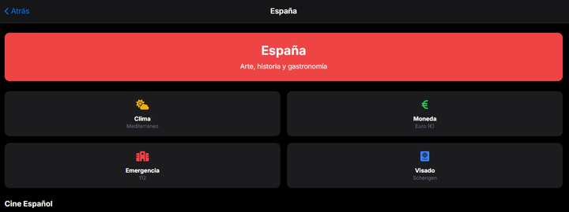
{kind=link}
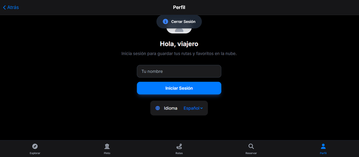
{kind=link}
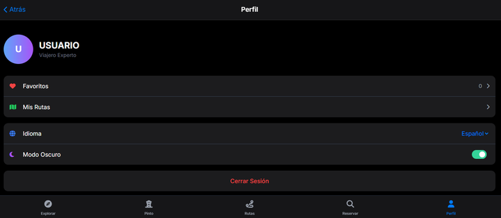
{kind=link}
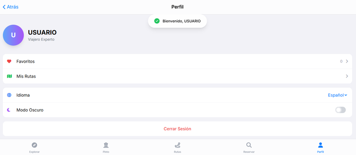
{kind=link}
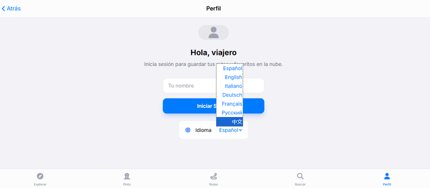
{kind=link}
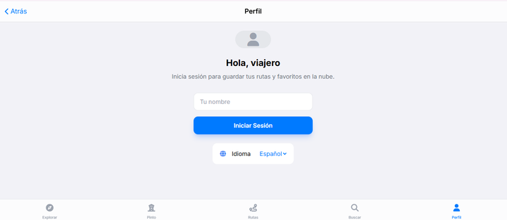
{kind=link}
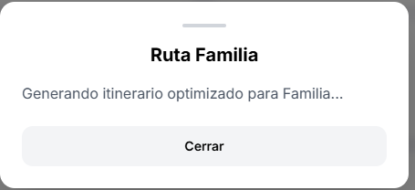
{kind=link}
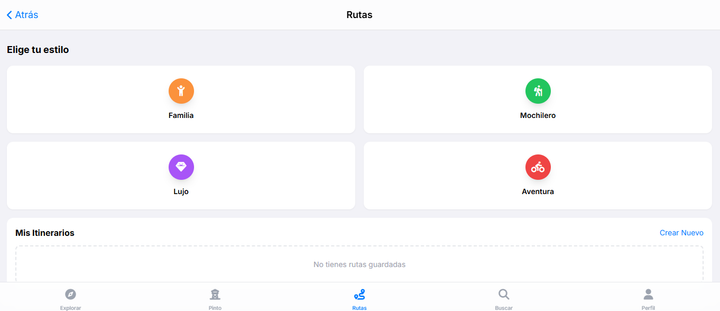
{kind=link}
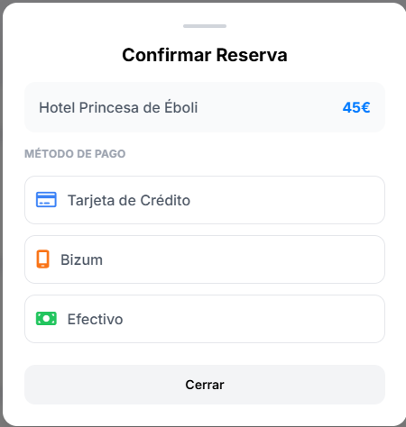
{kind=link}
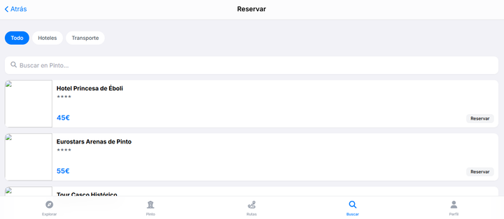
{kind=link}
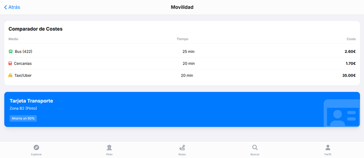
{kind=link}
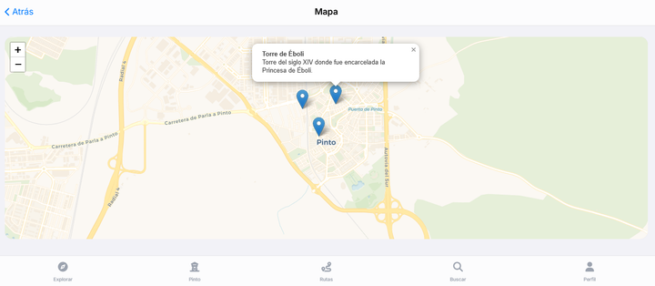
{kind=link}
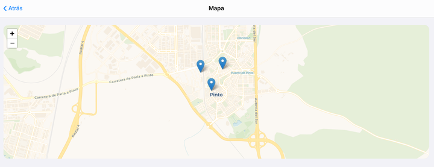
{kind=link}
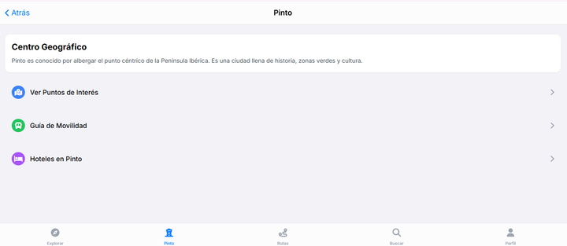
{kind=link}
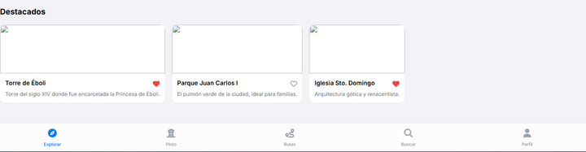
{kind=link}
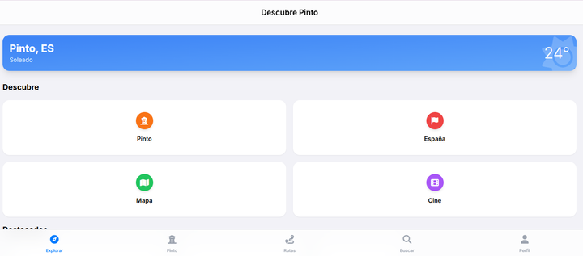
2ª VERSION
Aquí se corrigió un error que aparecía en la versión anterior: no permitía ver al usuario ver los sitios que había marcado como favoritos, tampoco se generaba ninguna ruta, y no permitía crear nuevas rutas. Ahora se corrige el error, pero sigue habiendo un problema, no permite guardar la ruta generada y tampoco da gran libertad de personalización al crear una nueva ruta. Esto se corrige más adelante.
{kind=link}
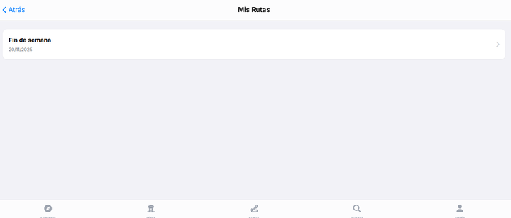
{kind=link}
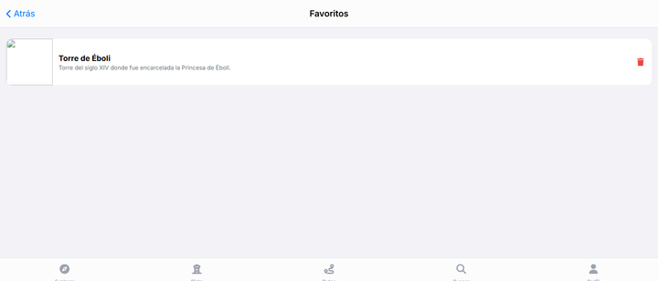
{kind=link}
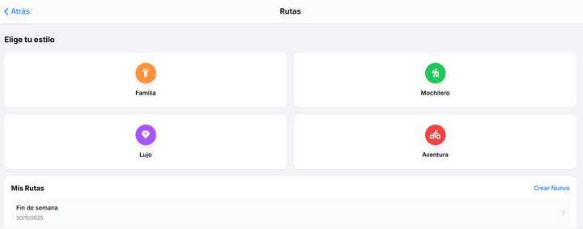
{kind=link}
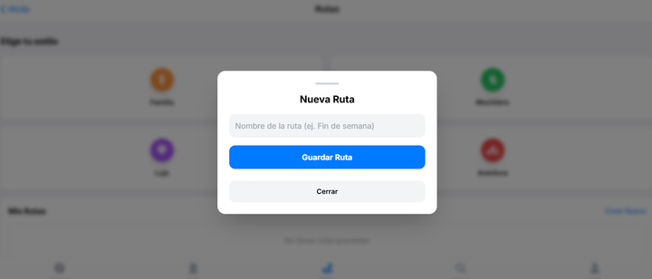
{kind=link}
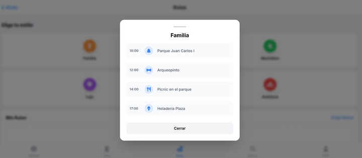
{kind=link}
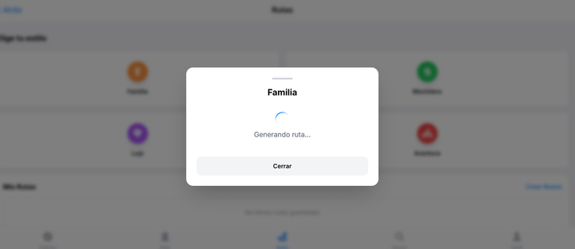
3ª VERSION
En esta versión, pedimos que añadiera más sitios en la seccion Explorar - Destacados para que hubieran más opciones. Tambien en Mapa, pedimos que nos hiciera un filtro y que aplicara sobre el mapa puntos de interés correspondiente a los sitios que había añadido. Pero solo nos generó el filtro, el mapa se esfumó. También reducimos el nº de idiomas disponibles, porque no se aplicaba la traducción a toda la aplicación, quedando así:
{kind=link}
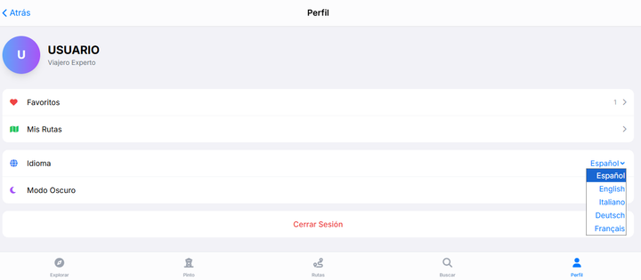
{kind=link}
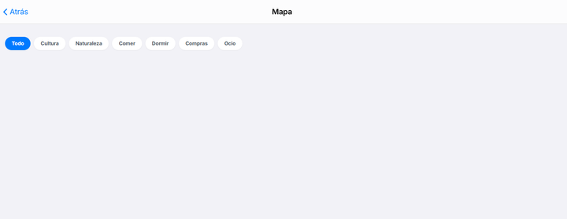
{kind=link}
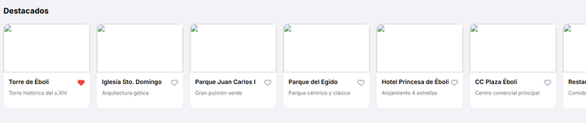
4ª VERSION
Tras varios errores al generar el mapa, finalmente se pudo solucionar este problema:
{kind=link}
{kind=link}
{kind=link}
5ª VERSION
Nos modificó en seccion Pinto, el apartado de Ver Puntos de Interés por uno nuevo: Eventos y Fiestas. A la vez, nos volvió a quitar el mapa.
{kind=link}
{kind=link}
{kind=link}
6ª VERSION
{kind=link}
{kind=link}
{kind=link}
7ª VERSION
Nos quitó en la Sección Pinto: Guia de movilidad

8ª VERSION
Aquí creamos un boceto para crear un formulario para la personalización de una ruta que el usuario quiera crear. Sin embargo, una vez completado todos los campos del mini-formulario, no se guardaba la ruta. Además, se añadió la opción de guardar la ruta que era generada automáticamente.
{kind=link}
{kind=link}
{kind=link}
{kind=link}
{kind=link}
{kind=link}
Boceto para el formulario de personalización al crear una ruta personalizada:
9ª VERSION
Aquí el único error que encontré fue cuando le das al botón de visualizar la ruta personalizada que recién habías creado, no te dejaba verla.
10ª VERSION
Aquí separamos 2 secciones que antes aparecían juntas y para mí, no me resultaba cómodo, y tampoco me gustaba cómo se veía, así que en esta versión cada sección es desarrollada con mucho más contenido por separado.
{kind=link}
{kind=link}
{kind=link}
{kind=link}
{kind=link}
11ª VERSION
Volvemos a recuperar en Seccion Pinto el apartado de Guia de movilidad. Además, en Hoteles en Pinto, incorporamos más hoteles:
{kind=link}
{kind=link}
{kind=link}
{kind=link}
{kind=link}
12ª VERSION
Incorporamos más secciones a la página principal como Salud, Gastronomía, Deportes y Bancos, información que me pareció interesante y realmente útil para un turista:
{kind=link}
{kind=link}
{kind=link}
{kind=link}
{kind=link}
{kind=link}
{kind=link}
13ª VERSION
Corregimos algunas secciones como Gastronomía, que muestra los restaurantes pero tienen un botón de Ver y no te deja ver nada, no funciona, además los símbolos de € me parecieron confusos, así que también los modificaremos:
{kind=link}
{kind=link}
{kind=link}
14ª VERSION

15 ª VERSION